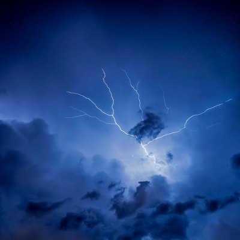

✖
Una tormenta eléctrica es un fenómeno meteorológico caracterizado por la presencia de rayos y sus efectos sonoros.
Las tormentas se crean cuando un centro de baja presión se desarrolla con un sistema de alta presión que lo rodea. Esta combinación de fuerzas opuestas puede crear vientos y resultar en la formación de nubes de tormenta, como el cumulonimbus. Las tormentas son una manera de que la atmósfera libere energía. Cuando el aire cálido y húmedo se encuentra con aire más frío y seco, el aire más cálido se eleva, el vapor de agua se condensa en la atmósfera y forma una nube. A medida que el vapor de agua se condensa, libera calor, que es una forma de energía.